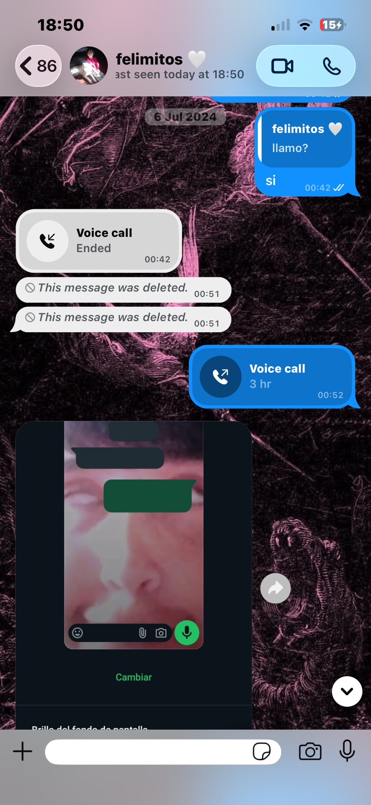
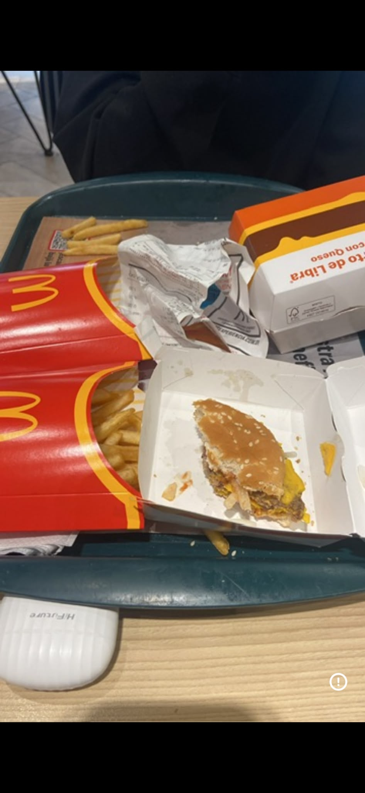
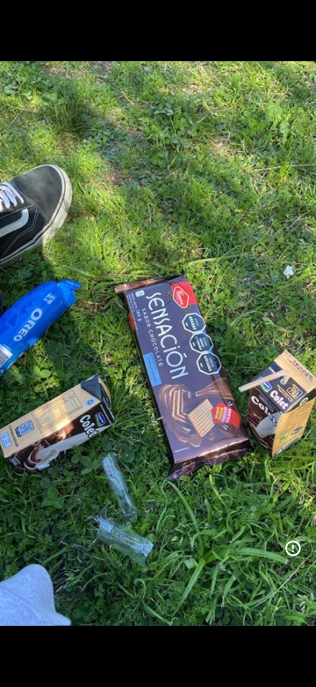

Hace exactamente...
↓ deslizá para ver más ↓
cuando te escribi haciendome el que no sabia lo que era answer porque te queria hablar ajajk te AMO pochi
no me acuerdo mucho de esa llamada sinceramente. lo unico que me acuerdo de ese dia es que te dije que vivia en la iglesia

de las mejores salidas de mi vida. tenia la panza llena de mariposas y estaba re nervioso aiiiii te ano

y aca estaba mas nervioso todavia me estaba cagando encima te juro que nervios
otra de mis salidas favoritas, y ademas, mi primer beso. eternamente feliz de que haya sido contigo

ya son dos años estando de novios, dos años desde que te pedi entre nervios y miedo que seas mi novia. dos años desde que decidi que vos ibas a ser mi compañera de vida por el resto de ella. dos años estando junto a la persona que mas amo y que mas me ha marcado y ayudado a crecer y madurar. no tengo mucho mas para decir que gracias por haberme acompañado y haberme servido de apoyo durante tanto tiempo, realmente no se donde estaria si no fuera por vos. estoy plena y eternamente agradecido con vos por ser quien sos y por serlo junto a mi. lo demas ya esta todo dicho. te amo y lo voy a seguir haciendo cuando el amor ya no exista. gracias por todo mi pochita ❤️
❤️ te amo. vamos por muchos años mas ❤️